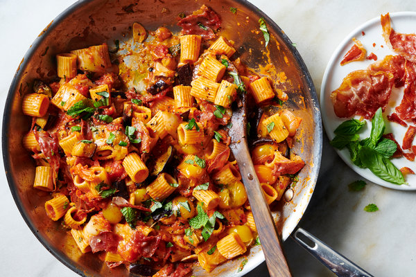

Pasta Alla Norma

Description
Pasta alla norma is a satisfying Sicilian pasta with tender eggplant, herby tomato sauce,
and ricotta salata cheese. All the comforting Italian flavors we love in just one pan.
This is a vegetarian main dish that even meat lovers will enjoy!
Ingredients
- 1 batch Super Simple Marinara Sauce, or 2 cups (16 ounces) store-bought marinara
- 2 medium eggplants (about 2 ¼ pounds total)
- ¼ cup + 1 teaspoon extra-virgin olive oil
- ¼ teaspoon fine salt, more to taste)
- 8 ounces rigatoni, ziti or spaghetti
- ½ cup chopped fresh basil, plus a handful more small basil leaves
- ½ to 1 teaspoon red pepper flakes, to taste (optional)
- ½ teaspoon dried oregano
- ¾ cup (1.5 ounces) finely grated ricotta salata and/or Parmesan cheesed)
Steps
- If making your own marinara: Cook the sauce per instructions. If it’s done cooking before you’re ready to assemble, cover the pot and keep it warm over very low heat. If you’re using store-bought marinara, warm it in a pot over medium-low heat while you cook the pasta.
- Meanwhile, preheat the oven to 425 degrees Fahrenheit with racks in the upper and lower thirds of the oven. Line two large, rimmed baking sheets with parchment paper for easy cleanup.
- Use a vegetable peeler to shave off long alternating strips of eggplant peel. The eggplants will look striped like zebras when you’re done. Then slice the eggplants into ½-inch thick rounds, discarding the end pieces.
- Place the eggplant on the lined baking sheets. Brush the rounds with olive oil on both sides. Sprinkle the eggplant with the salt and plenty of pepper. Roast until deeply golden and tender, about 35 to 45 minutes, flipping after 20 minutes. Set aside.
- Bring a large pot of salted water to boil and cook the pasta until al dente, according to package directions. Reserve some pasta cooking water before draining (about ½ cup should be plenty), then return the pasta to the pot
- When the eggplant is done and the marinara is finished cooking (or warmed through, if using store-bought), gently stir the roasted eggplant into the sauce. Add the remaining 1 teaspoon olive oil, fresh basil, red pepper flakes (skip if you don’t like spice, or load it up if you do). Crush the dried oregano between your fingers as you drop it in.
- Add the pasta to the sauce with a couple tablespoons of the reserved pasta cooking water, and gently stir it in. Add about two-thirds of the cheese, reserving the rest for garnish. Season to taste with additional salt (I usually add ¼ teaspoon more) and black pepper. You can add a bit more of the reserved pasta cooking water to loosen up the sauce, if desired.
- Divide the pasta between four bowls. Sprinkle the remaining cheese on top of the individual servings, followed by some extra fresh basil. For added richness, drizzle the servings lightly with olive oil. Enjoy! Leftover pasta will keep well in the refrigerator, covered, for 4 to 5 days.